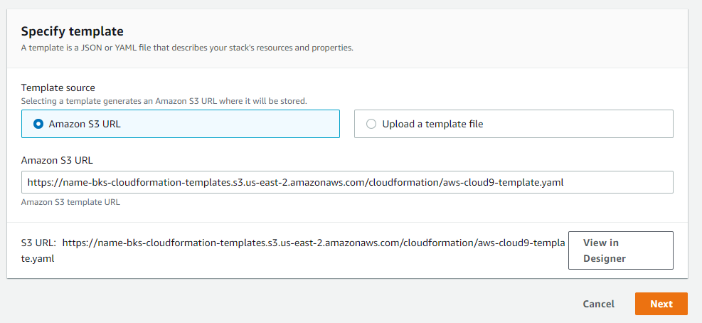
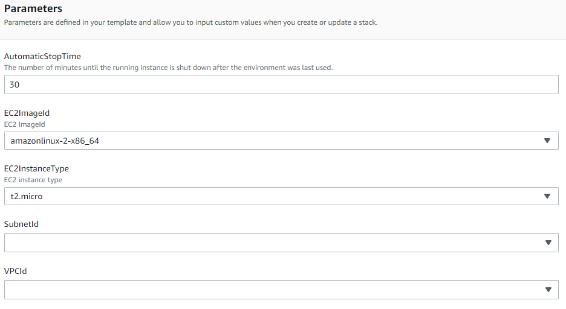
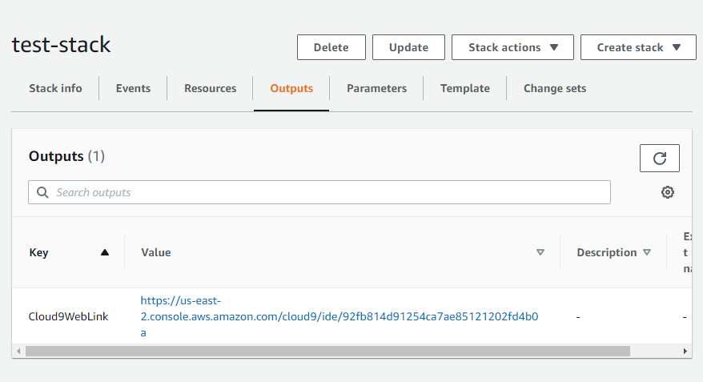
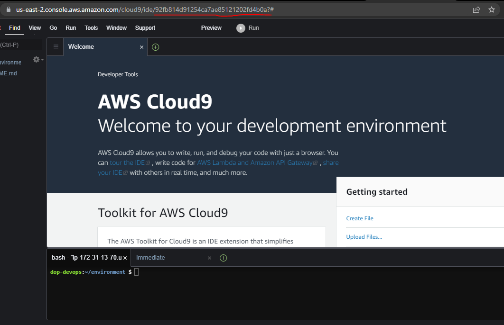

AWS Cloud9 IDE - CloudFormation
Description
This project was originally described in The Cloud Resume Challenge Book, using CloudFormation to create an AWS Cloud9 IDE, but I expanded it to use other technologies, such Terraform and Python / Boto3 (eventually Golang), for fun and for personal development.
What I liked about The Cloud Resume Challenge is that it only gave you the specifications for the end result, not detailed steps on how to complete it. In this regard, it more closely resembled the type of assignment a person would receive at their job.
Technologies Used
- AWS Cloud9
- AWS CloudFormation
Results
With an active AWS account, the user can spin up a browser based AWS Cloud9 IDE in about 1 minute.
1-Click Deployment
A 1-Click deployment is available for this project. Although few resources are created with this deployment, the following prerequisites will help ensure that the deployment will work for you.
- AWS account
- AWS user with administrative privileges
- AWS VPC with public subnets
The link below will take you to the AWS CloudFormation stack creation pages. The stack creation pages will allow you to specify details related to the CloudFormation deployment.
Presently, the deployment only offers modest configuration, as the current intent is to just illustrate basic CloudFormation skills and to compare CloudFormation to other forms of deployment like Terraform and Python.
Diagram
TODO: Add diagram
Video
TODO: Add video
Images
   
Code
The source code is available here.
Write-up
I will keep this short. I learned a lot about CloudFormation to complete this project, and I have a lot more CloudFormation to learn. I have found it to be a very productive tool for provisioning infrastructure.
Although, in my brief experience using Terraform to provision the same AWS Cloud9 resources, I think it seemed a lot easier to use and debug issues. I felt a lot more productive using Terraform for such a small project. Maybe that will change as I gain experience with both of these tools.